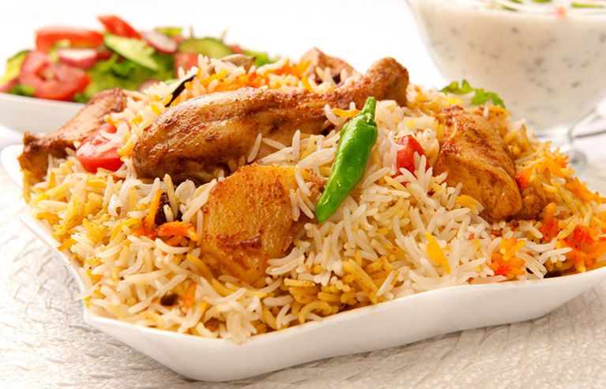

Home Page
Chicken Biryani

Description
Chicken biryani is a delicious Pakistani/Indian rice dish that's typically reserved for special occasions such as weddings, parties, or holidays such as Ramadan.
It has a lengthy preparation, but the work is definitely worth it. For biryani, basmati rice is the ideal variety to use.
Ingredients
- 4 Tablespoons Vegetable Oil, divided
- 4 Small Potatoes, peeled and halved
- 2 Large Onions, finely chopped
- 2 Cloves Garlic, minced
- 1 Tablespoon minced fresh Ginger Root
- 2 Medium Tomatoes, peeled and chopped
- 1 teaspoon Salt
- 1 teaspoon ground cumin
- ½ teaspoon chili powder
- ½ teaspoon ground black pepper
- ½ teaspoon ground turmeric
- 2 Tablespoons plain Yogurt
- 2 Tablespoons chopped fresh mint leaves
- ½ teaspoon ground cardamom
- 1 (2 inch) piece cinnamon stick
- 3 Pounds boneless, skinless chicken pieces cut into chunks